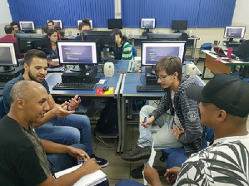

<!-- Utilizado para definir que este documento segue as regras de sintaxe do HTML 5 -->
<!DOCTYPE html>

<!DOCTYPE html>
<html lang="pt-br">

<head>
	<meta charset="UTF-8">
	<meta name="viewport" content="width=device-width, initial-scale=1.0">
	<link rel="stylesheet" type="text/css" href="../css/estilogeral.css" />
	<link rel="stylesheet" type="text/css" href="../css/styletecdev.css" />
	<link rel="shotcut icon" type="image/x-icon" href="../imagens/senac.ico" />
	<title>Téc Dev.Sistemas</title>
</head>

</html>

<link rel="stylesheet" href="style.css">
<html lang="pt-br">

<body>
	
	<nav id="menu">
		<ul>
			<li><a href="../index.html">Página Inicial</a></li>
			<li><a href="/paginas/Cursos.html">Cursos</a></li>
			<li><a href="/paginas/informacoes.html">Informações</a></li>
			<li><a href="/paginas/faleconosco.html">Fale Conosco</a></li>
		</ul>
	</nav>
	<h1>Um pouco mais sobre nosso Técnico em Desenvolvimento de Sistemas!</h1>

		<p>
			<br>
			
		<h1>&bull; Técnico em Desenvolvimento de Sistemas</h1>
		O desenvolvimento de novas soluções lhe desafia? Você gostaria de trabalhar em uma multinacional? O
		curso
		Técnico em Desenvolvimento de Sistemas - Bilíngue pode ser o primeiro passo para você realizar esses
		sonhos.
		Com ele, você terá a qualificação necessária para atuar na área de desenvolvimento, com um grande
		diferencial: a habilidade comunicacional em língua inglesa, para falar com um mercado cada dia mais
		globalizado. A área de desenvolvimento de sistemas emprega milhares de pessoas todos os dias e muitas
		das
		vagas não são supridas por falta de talentos. Segundo a Brasscom, Associação das Empresas de Tecnologia
		da
		Informação e Comunicação (TIC) e de Tecnologias Digitais, o segmento deverá precisar de 70 mil
		profissionais
		por ano, até 2024. Chegou a sua vez! Com 1.216 horas, o curso prepara o profissional para desenvolver
		sistemas computacionais utilizando o ambiente de desenvolvimento, seguindo as normas e especificações da
		lógica e das linguagens de programação bem como a modelagem, implementação e manutenção do banco de
		dados.
		Além disso, a formação prepara para o desenvolvimento, a manutenção e testes de programas de computador,
		adotando normas técnicas e de qualidade. Apesar de o curso ser bilíngue, o aluno não precisa saber
		inglês
		para ingressar. As aulas de inglês são ministradas de acordo com o andamento do conteúdo tecnológico e,
		dessa forma, são trabalhadas a fala, escrita e leitura relacionadas à profissão. Assim, você estará
		preparado para atuar em diversas frentes de trabalho, podendo empreender na área ou buscar seu primeiro
		estágio já nos primeiros meses de curso. A qualificação é uma excelente oportunidade para ingressar no
		mercado de trabalho, com muitas possibilidades de atuação. Venha para o Técnico em Desenvolvimento de
		Sistemas - Bilíngue do Senac-RS.
		</p>
		<br>
		<hr>
		<p>
			
		<h1>&bull; Mercado de Trabalho</h1>

		Além desse perfil básico, o Técnico em Desenvolvimento de Sistemas formado será também preparado
		para atuar com as novas tendências da área de Tecnologias de Informação e Comunicação, como
		desenvolvimento
		de soluções integradas usando Internet das Coisas, Sistemas Embarcados para Indústria 4.0, Computação em
		Nuvem e Micro-serviços.
		<br>
		Usando as várias plataformas de computação de maneira integrada, concebe, projeta, escreve e atualiza
		programas e sistemas, aplicando métodos ágeis de análise, projeto e programação, modelagem e acesso a
		bancos
		de dados, redes, técnicas de design para web, técnicas de projeto de Sites na Internet, desenvolvimento
		de
		aplicações distribuídas e para dispositivos móveis, desenvolvimento de aplicações da Internet das Coisas
		(IoT) e Indústria 4.0, dentre outras aplicações das TIC.
		<hr>

		<h1>&bull; Pré-requisitos</h1>
		<b>Idade mínima:</b> 15 anos completos;
		<br>
		<b>Escolaridade:</b> Ensino Médio cursando.
		<br>
		<hr>
		</p>


</body>

</html>